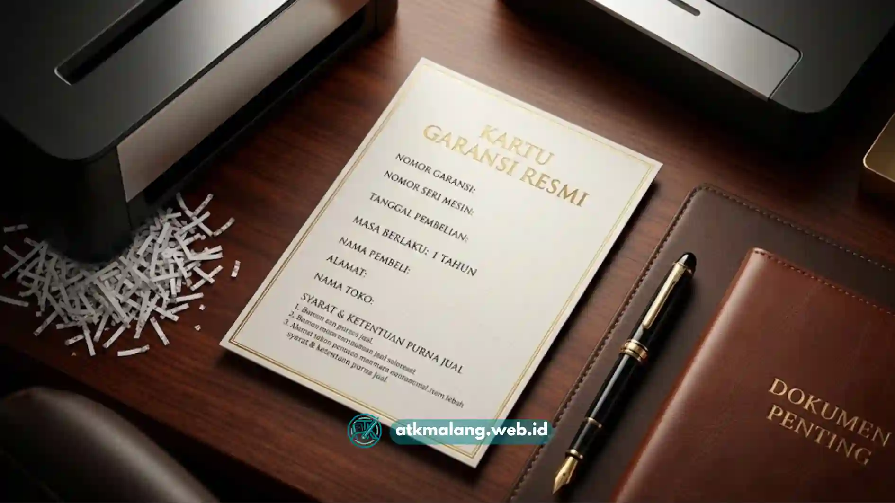

Bagi kantor maupun usaha di Malang yang berencana membeli mesin penghancur kertas, memastikan produk dilengkapi garansi resmi adalah langkah penting yang sering terlewat.
Garansi resmi bukan sekadar formalitas, melainkan bentuk perlindungan pembeli apabila terjadi kerusakan atau gangguan fungsi pada mesin.
Perlindungan ini sangat berguna untuk meminimalisasi biaya servis dalam periode tertentu setelah pembelian dilakukan di toko Alat Tulis Kantor Anda.
Daftar Isi
Mengapa Garansi Resmi Penting saat Membeli Mesin Penghancur Kertas
Mesin penghancur kertas bekerja dengan komponen mekanis seperti motor dan pisau pemotong yang terus bergerak setiap kali digunakan.
Seperti perangkat elektronik lainnya, komponen ini berisiko mengalami gangguan seiring waktu, apalagi jika digunakan dengan intensitas tinggi.
Garansi resmi memberikan kepastian bahwa jika terjadi kerusakan yang bukan disebabkan oleh kesalahan pengguna, pembeli dapat mengajukan perbaikan secara gratis.
Ini memungkinkan Anda memperoleh penggantian komponen tanpa menanggung biaya penuh sendiri.
Selain itu, produk dengan garansi resmi umumnya juga disertai dokumen pembelian yang jelas, sehingga memudahkan proses klaim apabila dibutuhkan di kemudian hari.
Apa Saja yang Perlu Dicek Sebelum Membeli
Sebelum memutuskan membeli mesin penghancur kertas di Malang, ada beberapa hal yang sebaiknya dipastikan terlebih dahulu.
Pastikan penjual atau distributor merupakan pihak yang resmi menjual produk tersebut, sehingga garansi yang diberikan benar-benar dapat digunakan dan bukan sekadar klaim sepihak.
Periksa juga masa berlaku garansi serta apa saja yang dicakup di dalamnya, misalnya apakah mencakup komponen motor, pisau, atau hanya kerusakan tertentu.
Selain itu, tanyakan pula bagaimana prosedur klaim garansi dijalankan saat terjadi masalah teknis.
Pastikan informasi terkait apakah unit perlu dikirim ke pusat servis atau bisa ditangani langsung di tempat Anda sudah terkonfirmasi dengan jelas.
Pentingnya Layanan Purnajual di Malang
Selain garansi, layanan purnajual juga menjadi pertimbangan penting, terutama bagi kantor yang mengandalkan mesin penghancur kertas untuk operasional harian.
Ketersediaan layanan servis dan suku cadang di wilayah Malang akan sangat membantu apabila mesin membutuhkan perbaikan mendesak.
Hal ini disebabkan karena pembeli tidak perlu repot mengirim unit ke luar kota yang berpotensi memakan waktu lebih lama.
Distributor yang memiliki dukungan purnajual yang jelas juga biasanya lebih responsif dalam menangani keluhan pelanggan.
Ini adalah nilai tambah yang sangat vital saat berinvestasi pada mesin elektronik kantor Anda.

Kartu garansi resmi sebagai bukti perlindungan jangka panjang untuk setiap pembelian produk kantor.Memilih Distributor yang Tepat
Memilih distributor mesin penghancur kertas yang tepat tidak hanya soal harga, tetapi juga soal kepercayaan jangka panjang.
Distributor yang baik umumnya bersedia memberikan informasi produk secara transparan, termasuk spesifikasi teknis, masa garansi, dan opsi layanan purnajual.
Sebaiknya bandingkan beberapa distributor sebelum memutuskan, dan pastikan ada bukti tertulis mengenai garansi yang diberikan.
Dengan adanya bukti fisik, kesalahpahaman di kemudian hari dapat dihindari saat Anda mengajukan klaim perbaikan.
Kesalahan Umum yang Perlu Dihindari
Beberapa kesalahan umum yang sering terjadi saat membeli mesin penghancur kertas antara lain tergiur harga murah tanpa memastikan status garansi produk.
Tidak menyimpan bukti pembelian atau kartu garansi dengan baik juga menjadi masalah sering kali saat klaim diajukan.
Serta tidak menanyakan secara jelas cakupan garansi sebelum transaksi selesai dapat menimbulkan perselisihan antara Anda dan penjual.
Kesalahan lain adalah membeli dari penjual yang tidak jelas asal distribusinya, sehingga saat terjadi kerusakan, klaim garansi menjadi sulit diproses.
Membeli mesin penghancur kertas di Malang sebaiknya tidak hanya mempertimbangkan harga dan fitur, tetapi juga memastikan produk didukung layanan purnajual yang jelas di wilayah setempat.
Dengan memperhatikan hal-hal tersebut, pembeli dapat merasa lebih tenang karena investasi pengadaan Alat Tulis Kantor akan lebih terlindungi dalam jangka panjang.